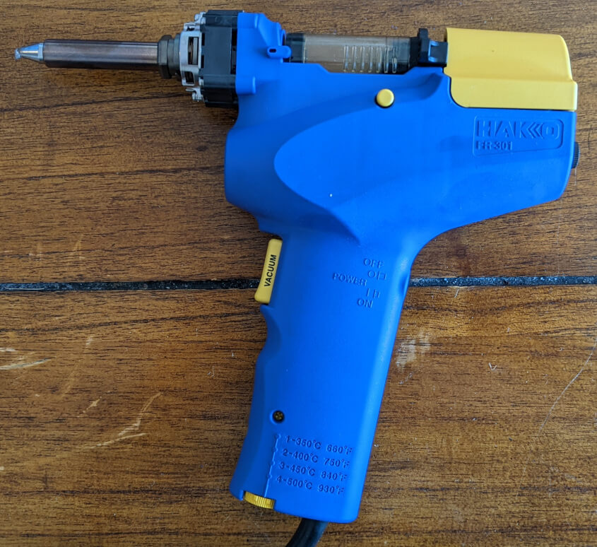
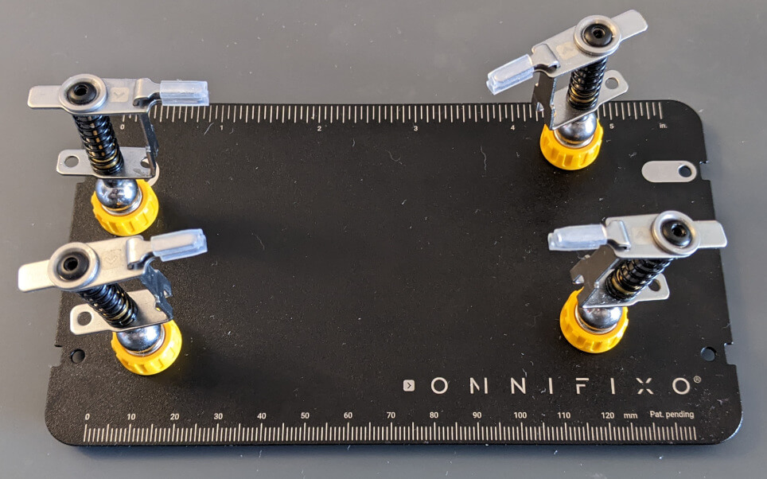

Ode To A Desoldering Pump
Sometimes I solder electronics. I take no joy in it. I do it as a means to an end. I consider myself an experienced beginner and hobbyist. I am not an expert.
The most personally frustrating part of soldering for me is correcting a mistake. I've soldered the wrong resistor into a spot on a really cramped board. I've already snipped the leads. Now what?
Previously, I'd curse myself a few times, break out the desoldering braid, and pray. Desoldering braid, in my experience, is terrible. I can count on one hand the number of occasions it worked without issue.

During my most recent solder session, I got the chance to finally break out my Hakko FR301-03/P Portable Desoldering Tool with Precise Temperature Control. I'm going to warn you, it's eye-wateringly expensive, but it's worth every penny! I corrected my mistake in less than a minute.
I don't blame you if you want to look around for cheaper alternatives. But I will never go back to braid or those cheap, spring-loaded solder suckers that never really work again. A heated tip with a vacuum pump is just too convenient.
While the desoldering pump is the biggest game-changing tool I've added to my hobby electronics arsenal, I want to share some other recommendations that have vastly improved my experience.
Most people know about "helping hands" tools that hold boards and components for you while you solder. The most common variations are a heavy chunk of metal with a bunch of ball joints with wing nuts to loosen and tighten the joint. They typically have two alligator clip "hands" and a magnifying glass. And they're garbage.

Check out Omnifixo instead. It's designed by a guy from Sweden, and it's amazing. Go check out the website to see its genius design and all of the clever little features. I can attest that it exceeds all expectations I had for a helping hands tool. If you're used to paying under $10 for the cheap versions of this tool, you might experience a bit of sticker shock. But this is another tool that's well worth the price.
Finally, what the hell is that component? I can't read the label on it. It's got a number printed on it. I searched it on the web and figured it out, but that took like 10 minutes. Now that I know what it is, how can I be sure it's even working?
There's a tool for that. Search your favorite marketplace that drop-ships cheap knock-offs from China (i.e. Amazon, eBay, AliExpress, etc.) for "LCR-T7" or "T7 Tester". You should be able to find a small device with a screen, a teal zero insertion force socket, and a single yellow button for around $20.
This thing is amazing! Plug in almost any passive component and it'll tell you what it is. It'll tell you the resistance of resistors, the capacitance of capacitors, and the direction of diodes. It'll identify the pins of transistors. And it does it all in mere seconds.
In case it wasn't obvious, I'm not making any commissions, kickbacks, or money of any kind by recommending these tools. The only one I linked to was the Omniflexo because you can only buy it from its website right now. There are no affiliate links or anything like that.